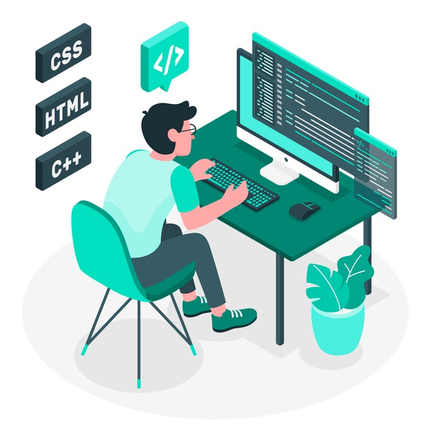

Graduate from an associate degree in GIS and Remote Sensing from Universitas Gadjah Mada.
Familiar with many GIS implementation to address land based problems.
Love to learn new skills related with information technologies.
Highly motivated, full of curiousity, love to work as a team but also being able to work independently.
Lately I've been learning data visualization, data analysis, and data manipulation using Python and also I'm learning website development. It is fun !!!
SKILLS
GIS
- ArcGIS - Quantum GIS - Image Processing - Remote Sensing - Transformation Index - Site Selection -
Level : Advanced
Python
- Data visualization - Data Manipulation - Pandas - Matplotlib - Seaborn - Numpy -
Level : Intermediate
Database
- SQL - RDBMS - Data Mining - Geodatabase -
Level : Intermediate
Web Dev

- HTML - CSS - Javascript -
Level : Beginner
Education
Associate of Applied Science in GIS and Remote Sensing, Universitas Gadjah Mada
Here I learnt about science of geography in general such as regional geography, metheorology and climatology, hidrology, geomorphology.
I also learnt about land measurement and land surveying using many tools. For more specific courses, I learnt math,
fundamental computer programming, databases, remote sensing, GIS and its implementation in marine, urban planning, land resources, and disaster.
Experience
Local Individual Contractor - UNDP Indonesia
Jakarta, Jan 2019 - Jun 2019
GIS Operator - Ministry of Environtment and Forestry
Bogor, Feb 2018 - Dec 2018
Laboratory Assistant for Data Analysis and Spatial Modelling - RS GIS Department, Gadjah Mada University
Yogyakarta, Sep 2017 - Dec 2017
Student Intern - Ministry of Marine Affairs and Fisheries